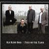

Celtic Lyrics Corner > Artists & Groups > Old Blind Dogs > Four On The Floor > Gaelic Song
|  | Gaelic Song |
| Credits : | Traditional; arranged by Old Blind Dogs |
| Appears On : | Four On The Floor |
| Language : | Gàidhlig (Scottish Gaelic) |
| Lyrics : | English Translation : |
| Là dhomh 's mi 'm beinn a' cheathaich | One day when I was on the misty mountain |
| Sèist : | Chorus (after each verse) : |
| Far al a leò ro ho bhi ò | Far al a leò ro ho bhi ò |
| Hoireann is ò ho rò bhi o ho | Hoireann is ò ho rò bhi o ho |
| Hi rì ho ro ho bha ò hug ò ro | Hi rì ho ro ho bha ò hug ò ro |
| 'S ann agam 's a bha 'n sealladh | I saw a wonderful sight |
| Gun deach bàta Chloinn Nìll seachad | The Clan MacNeill's ship passed by |
| Mach bho dhùthaich MhicGill-Eathain | Away from MacLean country |
| Steach gu Cìosamul an aighir | Towards joyful Kisimul |
| Far am faight' a' chuirm ri gabhail | Where the feasting takes place |
| Fìon 'ga òl oidhche gu latha | Drinking wine from night to day |
| Pìobaireachd nam feadan àrd' laghach | The piping of the tall, lovely drones |
| Clàrsach bhinn ga gleusadh mar ris | The sweet harp being tuned alongside |
| Sìoda donn ga chur air na mnathan | Russet silk being worn by the ladies |
| Gill'Eòghanain mòr an gaisgeach | Gilleonan, the great hero |
| Ruairi òg an t-oighre maiseach | Young Rory, the handsome heir |